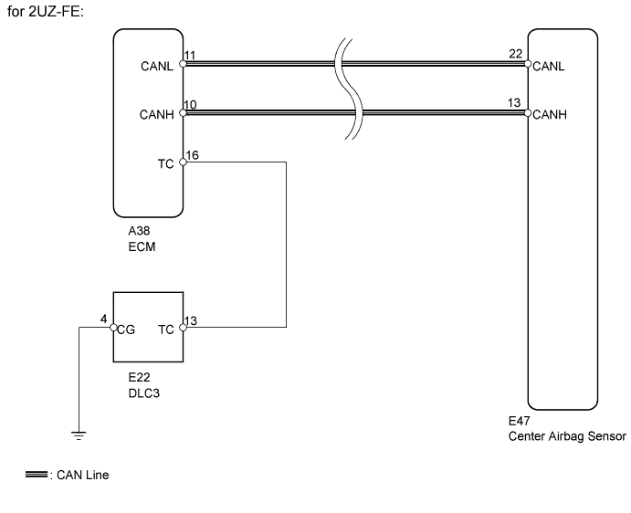
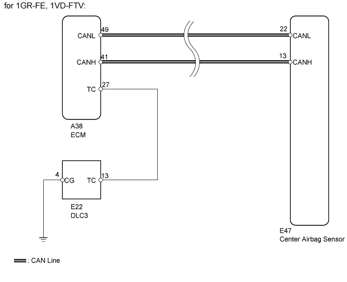
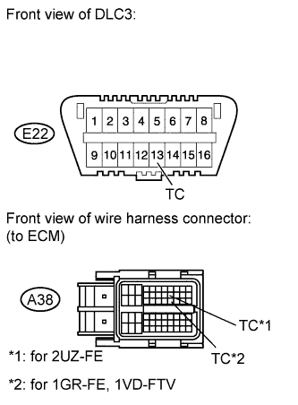
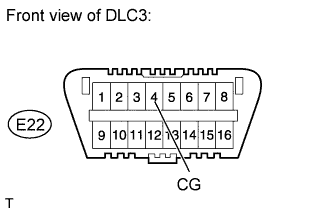
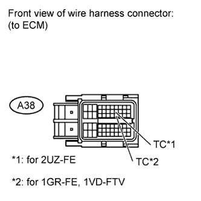

AIRBAG SYSTEM > Diagnosis Circuit |


| 1.CHECK CAN COMMUNICATION SYSTEM |
Check if a CAN communication system DTC is output.
| Result | Proceed to |
| DTC is not output | A |
| DTC is output (for LHD) | B |
| DTC is output (for RHD) | C |
|
| ||||
|
| ||||
| A | |
| 2.CHECK HARNESS AND CONNECTOR (DLC3 - ECM) |
 |
Turn the engine switch off.
Disconnect the A38 connector from the ECM.
Measure the resistance according to the value(s) in the table below.
| Tester Connection | Condition | Specified Condition |
| E22-13 (TC) - A38-16 (TC) | Always | Below 1 Ω |
| Tester Connection | Condition | Specified Condition |
| E22-13 (TC) - A38-27 (TC) | Always | Below 1 Ω |
|
| ||||
| OK | |
| 3.CHECK HARNESS AND CONNECTOR (DLC3 - BODY GROUND) |
 |
Measure the resistance according to the value(s) in the table below.
| Tester Connection | Condition | Specified Condition |
| E22-4 (CG) - Body ground | Always | Below 1 Ω |
|
| ||||
| OK | |
| 4.CHECK HARNESS AND CONNECTOR (TC OF ECM - BODY GROUND) |
 |
Measure the resistance according to the value(s) in the table below.
| Tester Connection | Condition | Specified Condition |
| A38-16 (TC) - Body ground | Always | 1 MΩ or higher |
| Tester Connection | Condition | Specified Condition |
| A38-27 (TC) - Body ground | Always | 1 MΩ or higher |
|
| ||||
| OK | ||
| ||